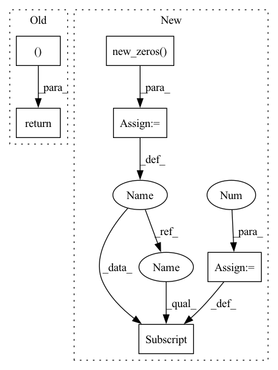

Pattern ID :26429
Before Change
for i in range(mod.in_channels):
for j in range(kw):
for k in range(kh):
g_filter[k + kh * j + kw * kh * i, 0, j, k ] = 1
return g_filter
@torch.no_grad()
def _save_input(self, mod: LayerType, i: tuple[torch.Tensor]):After Change
Convolution filter that extracts input patches.
kh, kw = mod.kernel_size
shape = (mod.in_channels, kh, kw, 1, kh, kw)
g_filter = mod.weight.new_zeros( shape)
for i in range(kh):
for j in range(kw):
g_filter[:, i, j, :, i, j] = 1 // TODO: avoid for loop
g_filter = g_filter.flatten(0, 2) // (in * kh * kw, 1, kh, kw)
filter_conv = nn.Conv2d(in_channels=1, out_channels=mod.in_channels * kh * kw,
kernel_size=(kh, kw), bias=False,In pattern: SUPERPATTERN
Frequency: 3
Non-data size: 6
Instances Fragment ID: 79263711
Project Name: ain-soph/trojanzoo
Commit Name: 6c7dbc51bfacdfb1fbe957a3544f7f6d1ae55bb4
Time: 2021-09-24
Author: ain-soph@live.com
File Name: trojanzoo/utils/fim/ekfac.py
M Class Name: EKFAC
N Class Name: EKFAC
M Method Name: _get_gathering_filter(1)
N Method Name: _get_gathering_filter(2)
M Parent Class: BaseKFAC
N Parent Class: Optimizer
M File Name: trojanzoo/utils/fim/ekfac.py
N File Name: trojanzoo/utils/fim/ekfac.py
M Start Line: 98
M End Line: 107
N Start Line: 60
N End Line: 72
Before Change
label_scores = center_priors.new_zeros(labels.shape, dtype=torch.float)
// No target
if num_gts == 0:
return labels, label_scores, bbox_targets, dist_targets, 0
assign_result = self.assigner.assign(
cls_preds.sigmoid(), center_priors, decoded_bboxes, gt_bboxes, gt_labels
)After Change
labels = center_priors.new_full(
(num_priors,), self.num_classes, dtype=torch.long
)
label_weights = center_priors.new_zeros( num_priors, dtype=torch.float)
label_scores = center_priors.new_zeros(labels.shape, dtype=torch.float)
num_pos_per_img = pos_inds.size(0)
pos_ious = assign_result.max_overlaps[pos_inds]
if len(pos_inds) > 0:
bbox_targets[pos_inds, :] = pos_gt_bboxes
dist_targets[pos_inds, :] = (
bbox2distance(center_priors[pos_inds, :2], pos_gt_bboxes)
/ center_priors[pos_inds, None, 2]
)
dist_targets = dist_targets.clamp(min=0, max=self.reg_max - 0.1)
labels[pos_inds] = gt_labels[pos_assigned_gt_inds]
label_scores[pos_inds] = pos_ious
label_weights[pos_inds] = 1.0
if len(neg_inds) > 0:
label_weights[neg_inds] = 1.0
return (
labels,
label_scores,
label_weights, Fragment ID: 79263713
Project Name: rangilyu/nanodet
Commit Name: d8ba391e33f9092314d1a0b204a8d3172852774b
Time: 2022-12-21
Author: 517855956@qq.com
File Name: nanodet/model/head/nanodet_plus_head.py
M Class Name: NanoDetPlusHead
N Class Name: NanoDetPlusHead
M Method Name: target_assign_single_img(7)
N Method Name: target_assign_single_img(6)
M Parent Class: nn.Module
N Parent Class: nn.Module
M File Name: nanodet/model/head/nanodet_plus_head.py
N File Name: nanodet/model/head/nanodet_plus_head.py
M Start Line: 297
M End Line: 338
N Start Line: 303
N End Line: 375
Before Change
else:
seq_mask = None
return att_feats, seq, att_masks, seq_mask
def _forward(self, fc_feats, att_feats, seq, att_masks=None, labels=None):
att_feats, seq, att_masks, seq_mask = self._prepare_feature_forward(att_feats, att_masks, seq, labels)
out = self.model(att_feats, seq, att_masks, seq_mask, memory_matrix=self.memory_matrix, labels = labels)After Change
//dummy_memory_matrix = self.memory_matrix.unsqueeze(0).expand(att_feats.size(0), self.memory_matrix.size(0), self.memory_matrix.size(1))
max_num_protype = max((labels[:,-1]*3 + labels[:,:-1].sum(-1))) * self.num_prototype
query_matrix = self.memory_matrix.new_zeros( att_feats.size(0), max_num_protype, self.memory_matrix.shape[-1])
cmn_masks = self.memory_matrix.new_zeros(query_matrix.shape[0], att_feats.size(1), max_num_protype)
for i in range(att_feats.size(0)):
cur_query_matrix = []
//print(labels[i])
for j in range(len(labels[i])):
if labels[i, j] == 1:
if j != len(labels[i])-1:
cur_query_matrix.extend(self.memory_matrix[j*self.num_prototype:(j+1)*self.num_prototype, :])
else:
cur_query_matrix.extend(self.memory_matrix[j * self.num_prototype:, :])
cur_query_matrix = torch.stack(cur_query_matrix, 0)
//print("111",query_matrix[i, :cur_query_matrix.shape[0], :].shape, cur_query_matrix.shape)
query_matrix[i, :cur_query_matrix.shape[0], :] = cur_query_matrix
cmn_masks[i, :, :cur_query_matrix.shape[0]] = 1
responses = self.cmn(att_feats, query_matrix, query_matrix, cmn_masks)
//embeddings = embeddings + responses
att_feats = att_feats + responses Fragment ID: 79263715
Project Name: markin-wang/xpronet
Commit Name: f1eadeb44fcd3ca935352b9cc7d30eab0fa8c753
Time: 2021-11-21
Author: cserwj@gmail.com
File Name: modules/base_cmn.py
M Class Name: BaseCMN
N Class Name: BaseCMN
M Method Name: _prepare_feature_forward(5)
N Method Name: _prepare_feature_forward(5)
M Parent Class: AttModel
N Parent Class: AttModel
M File Name: modules/base_cmn.py
N File Name: modules/base_cmn.py
M Start Line: 402
M End Line: 451
N Start Line: 391
N End Line: 444